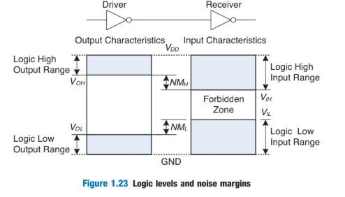
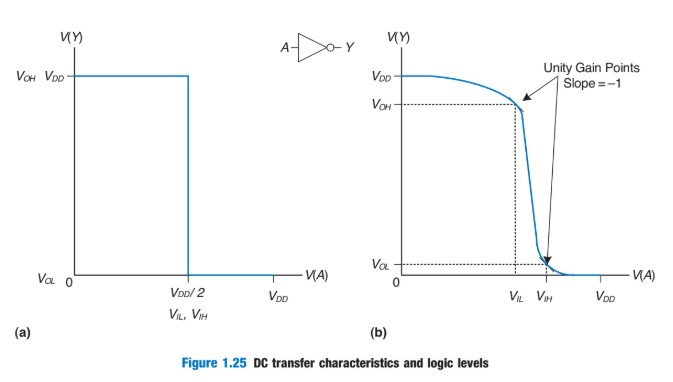
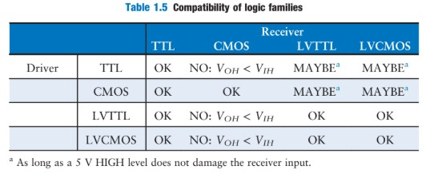
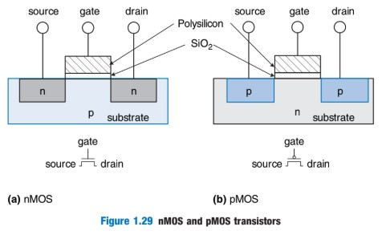
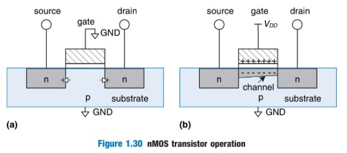
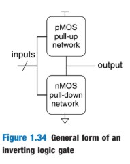
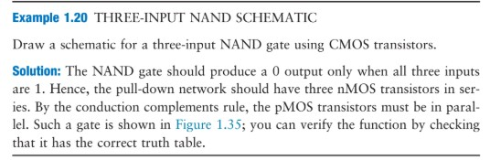
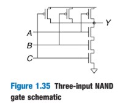

E85: Reading 2
Section 1.6 - 1.9
tl;dr version
May 25, 2020
Section 1.6: Beneath the Digital Abstraction
We must remember that all digital systems are made of components analog components. The *Ground* or *GND* is usually 0V, while the power supply voltage or $V_{DD}$ is generally 5V but has dropped to 3.3V, 2.5V, 1.8V and lower for smaller transistors or lower power.
**Logic Levels** are the tool to map the continuous voltages to binary HIGH and LOW. The figure below shows a pictoral representation.

- As seen with the two gates, the driver produces a LOW output with range $[0 - V_{OL}]$ or a HIGH output with range $[V_{OH} - V_{DD}]$.
- If the receiver gets an input from $[0 - V_{IL}]$ it will map the output to LOW. If the receiver gest an input from $[0 - V_{IH}]$ it will map the output to HIGH.
- Anywhere between is the ***forbidden zone*** $[V_{IL} - V_{IH}$]. Gates die here.
The values of $V_{OH}, V_{OL}, V_{IH}, V_{IL}$ are the ***logic levels.***
The **noise margin** is the amount of noise that can be added to a worst-case output such that the signal can still be interpretted as valid. The formula for the noise margins are:
$$NM_{L} = V_{IL} - V_{OL}$$
$$NM_{H} = V_{OH} - V_{OL}$$
There is an example on proper calculation of noise margins and interpretations on page 24.
!!! ERROR: Note on Logic Levels
When selecting driver and reciever gates, it is **imperative** that we choose:
$$V_{OL} < V_{IL} \; and \; V_{OH} < V_{IH} $$
The limit of digital abstraction is through the ***DC transfer characteristics*** of the gates. Remember when designing that:
- We want to maximize the noise margins.
- A reasonable place to select logic levels is where the transfer characteristc $ \frac{dV(Y)}{dV(A)} = -1. $ These points are known as the *unity gain points* and generally meet the above specification.

The **Static Discipline** requires that given logically valid inputs, every circuit element will produce logically valid output. To conform to this discipline, **all gates communicating must have compatible logic levels.** As a result, components are grouped into *logic families* so that they can easily be selected for use. The tables below show this.
Logic Family | $V_{DD}$ | $V_{IL}$ | $V_{IH}$ | $V_{OL}$ | $V_{OH}$ |
------------------|---------------|----------|----------|----------|----------|
TTL | 5 (4.75-5.25) | 0.8 | 2.0 | 0.4 | 2.4 |
CMOS | 5 (4.5-6) | 1.35 | 3.15 | 0.33 | 3.84 |
LVTTL | 3.3 (3-3.6) | 0.8 | 2.0 | 0.4 | 2.4 |
LVCMOS | 3.3 (3-3.6) | 0.9 | 1.8 | 0.36 | 2.7 |

Section 1.7: CMOS Transistors
The most common transistors are:
- BJT: Bipolar Junction Transistor
- MOSFET: Metal-Oxide Semiconductor Field Effect Transistor
MOSFETs are created from semiconductors, which generally is p-type (extra electron hole) and n-type (extra electron) doped silicon. *Diodes* can be produced from a p-type, n-type junction. *Forward bias* allows current to flow, *reverse bias* means no current flow.
There are two types of MOSFETs:
-nMOS: n-type dopants next to the gate called the *source* and the *drain* that are all built on top of a p-type substrate.
-pMOS: p-type dopants next to the gate, built on top of an n-type substrate.
**How do they work (nMOS)?**
The substrate of the nMOS is tied to the GND at 0V. If the gate is also 0V, the interface between the substrate and source/drain is a reverse biased diode. There is no path for the current to flow and the transistor is OFF.
If the gate is raised to $V_{DD}$, the gate becomes a charged capacitor. The electric field draws in so much positive charge on the top plate and negative charge on the bottom plate, that the p-type substrate beneath the gate **inverts into a n-type channel.** The channel connects the n-type source and drain and the transistor is ON. The gate voltage required to turn on the transistor is called the *threshold voltage* and tends to be either 0.3 to 0.7 volts.
pMOS transistors work oppositely to the nMOS counterpart:
- The substrate is tied to $ V_{DD} $
- If the gate is tied to $ V_{DD} $ the transistor is OFF.
- If the gate is tied to GND, the channel inverts to p-type and the transistor is ON.
!!! NOTE: WHY BOTH?
We need both types of MOSFETs because neither is perfect. nMOS passes 0s well, pMOS passes 1's well. CMOS refers to **complementary MOS** that puts both transistor types on a single chip.


CMOS allows us to build logic gates out of transistors. When reading transistor schematics, remember that:
- Flat Line = $ V_{DD} $
- Triangle = GND
- Wires are always joined at 3 way junctions
- Wires are only joined at 4 way junctions at a dot.
Example constructions of logic gates with transistors are on page 31. The general construction of an inverting logic gate is a pMOS pull-up network between $ V_{DD} $ and the output and an nMOS pull down network between the output and GND. Remember:
- When transistors are parallel, the network is ON if even one transistor is ON.
- When transistors are in series, the network is ON only if both transistors are ON.
!!! ERROR: States
It is **bad** if both the pull-up and pull-down networks are either both ON or both OFF. If both ON, the circuit shorts. If both OFF, the output ***floats*** to an undefined value.
We can assure that the gate works by following the principle of ***conduction complements*** This rule is as follows: **When nMOS transistors are in series, pMOS transistors must be in parallel. When nMOS transistors are in parallel, pMOS transistors must be in series.**



An important note is that it is **impossible** to build an AND gate with a single CMOS gate, the easiest way to do this is to combine a NAND gate followed by a NOT gate.
A **Transmission Gate** is the parallel combinatino of nMOS and pMOS. This type of switch is bidrectional with no preferred input or output side. The control signals are called *enables* or $EN$ and $\overline{EN}$.
- If $EN = 0$ and $\overline{EN} = 1$ both transistors are OFF and AB is not connected.
- If $EN = 1$ and $\overline{EN} = 0$ the gate is enabled any value can flow from A and B.
**Pseudo-nMOS Logic:**
The facts of reality are as follows:
- Transistors in series are slower than transistors in parallel.
- pMOS transistors are slower than nMOS transistors because holes cannot move as fast as electrons in the silicon lattice.
- Parallel nMOS are faster and series pMOS are slow (the morphology of CMOS NOR gate.)
 Pseudo-nMOS logic replaces the slow sstack of pMOS transistors with a single weak pMOS transistor that is **always on**. This single transistor produces as *weak pull-up* which means that it will only output HIGH for the system if none of the nMOS transistores are ON. If any are ON, the weak HIGH is overpowered.
The advantage is the construction of a fast NOR gate. The disadantage is that when the output is LOW both the pMOS and nMOS are on, and and thus a short circuit that draws much power exists in the system. Pictured is a pseudo-nMOS four input NOR gate.
Pseudo-nMOS logic replaces the slow sstack of pMOS transistors with a single weak pMOS transistor that is **always on**. This single transistor produces as *weak pull-up* which means that it will only output HIGH for the system if none of the nMOS transistores are ON. If any are ON, the weak HIGH is overpowered.
The advantage is the construction of a fast NOR gate. The disadantage is that when the output is LOW both the pMOS and nMOS are on, and and thus a short circuit that draws much power exists in the system. Pictured is a pseudo-nMOS four input NOR gate.
Section 1.8: Power Consumption
The **Power Consumption** of a digital circuit is a measure to the amount of energy used per unit time. An important feature of digital systems is that they consume two forms of power:
1. **Dynamic Power:** The power used to charge capacitance as signals change between 0 and 1.
2. **Static Power:** The power used even when signals do not change and the system is idle.
!!! NOTE: Formula for Dynamic Power
$$ P_{dynamic} = \frac{1}{2} CV_{DD}^{2}f $$ Where the energy drawn to charge a capacitance C to $V_{DD}$ is $CV_{DD}^{2}$. The voltage of the capacitor changes at frequency $ f $, and therefore charges for half the frequency and discharges for the other half. Dischargng does not consume power.
!!! NOTE: Formula for Static Power
$$ P_{static} = I_{DD}V_{DD} $$ Where $ I_{DD} $ represents the ***leakage current*** or the ***quiescent*** supply current between $ V_{DD} $ and GND. Sometimes this is large depending on the transistors selected.